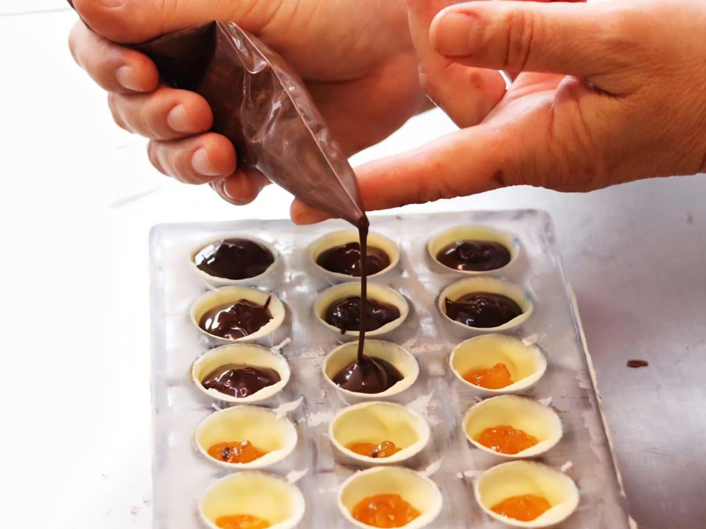

Curso profissionalizante · Confeitaria
Domine técnica, acabamento e criação para vender confeitaria com padrão profissional.
Uma formação prática para evoluir em massas, cremes, montagem, finalização e produtos com alto valor percebido.
Próxima turma
Início em 10/09/26
18h30 às 22h30
Formação completa
Conteúdo prático para criar doces com padrão profissional
Uma jornada objetiva para desenvolver técnica, acabamento, padronização e segurança de produção.
Bases da confeitaria
Organização, medidas, processos e fundamentos.
Massas e cremes
Estrutura, textura, sabor e padronização.
Bolos e recheios
Montagem, equilíbrio e acabamento.
Tortas e sobremesas
Produção, finalização e apresentação.
Chocolates
Técnicas, brilho, textura e cuidado visual.
Panificação doce
Massas, fermentação e processos essenciais.
Acabamento
Detalhe, estética e valor percebido.
Produto vendável
Padrão, produção e visão comercial.
Precisão e acabamento
Confeitaria exige técnica, processo e cuidado visual.
Da base ao acabamento, cada etapa precisa ter padrão para que o produto seja bonito, estável e vendável.
Confeitaria na mídia
Uma escola que já foi cenário da confeitaria na TV
Batalha dos Confeiteiros e produções gastronômicas reforçam a estrutura da escola.

Técnica em execução
O acabamento começa no domínio da mão.
Prática orientada para desenvolver precisão, ritmo e padrão visual em cada preparo.
Para começar
Construa base para entrar na confeitaria com segurança
Aprenda processos, organização e fundamentos antes de avançar para montagem e finalização.
Para vender melhor
Melhore padrão, acabamento e valor percebido
Conteúdo pensado para quem já vende ou quer transformar doces em negócio.
Para empreender
Crie produtos mais consistentes e profissionais
Padronização, estética e visão prática para qualificar cardápio e produção.
O processo
Medir, preparar, montar, finalizar e padronizar.
O resultado
Mais técnica, acabamento e confiança para vender.
